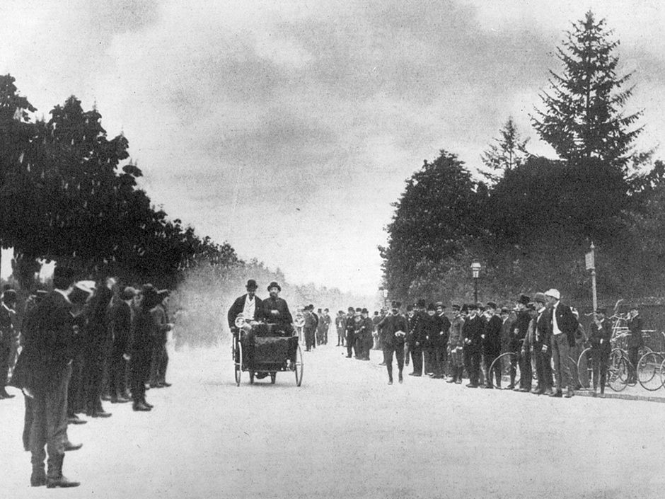

History
First Cars

The first steam-powered car was created in 1769. The first internal combustion engine car was fuelled by hydrogen and was created in 1808. From 1870-1885 four versions of more sophisticated combustion engine cars were created. Two of these cars were a four-cycle gasoline engine and a four-stroke petrol engine. These cars also included improved steering, a clutch and a brake. In 1885 Karl Benz developed a petrol powerd car which is considered to be the first production car. In 1913, Henry Ford's Model T became the first mass-produced car made on a moving assembly line.Find out more...
The Birth of Racing
The first ever car race was held in Paris on the 28th of April 1887. The track was a mile and a quarter long and streched between the bridges of Neuilly-sur-Seine and Bois de Boulogne. Since this race was held in the first few years after the car's creation, race-cars were just a distant concept for most people at the time, but not for Georges Bouton and Count Jules-Albert de Dion. They created the world's first race car and were the only team to show up to the race. The race went ahead with Bouton driving the only car in the race. He finished the race in what was then record speeds, clocking in at just over 27 miles per hour as he crossed the finish. This race would go on to kickstart an industry of racing and speed which would explode over the decades that followed.Find out more...